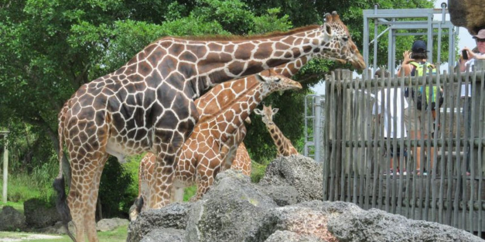

Los zoológicos suelen albergar animales que normalmente no se encuentran localmente. Puede encontrar leones, tigres, lobos, osos, jirafas, monos, elefantes y más. Cada instalación es un poco diferente. Los primeros zoológicos datan del siglo 35 a. C. en Egipto y hoy en día existen miles de instalaciones en todo el mundo que apoyan a las poblaciones de animales. La idea de restringir la libertad de un animal puede resultar muy molesta, incluso si los recintos que se utilizan reproducen un hábitat natural con gran especificidad. El cautiverio significa que el animal está a merced de sus cuidadores. Es por eso que evaluar los pros y los contras de los zoológicos es un proceso tan importante y en evolución.
¿Cuáles son las ventajas de los zoológicos?
1. Los zoológicos ofrecen oportunidades de aprendizaje a su comunidad local. Cuando hay un zoológico local en una comunidad, existe la oportunidad de interactuar con animales que normalmente no sería posible. Al mismo tiempo, existe la oportunidad de enseñar a las personas más sobre la naturaleza. Los niños pueden participar para aprender conceptos científicos. Las familias pueden planificar eventos en torno a una visita al zoológico para crear más tiempo juntos. No solo podemos aprender sobre nosotros mismos con un zoológico, también podemos aprender cómo funciona el resto del mundo al mismo tiempo.
2. Los zoológicos pueden salvar a los animales en peligro de extinción. Uno de los mejores ejemplos de que un zoológico puede salvar una especie es el caballo de Przewalski. En la década de 1940, el nivel de población de esta especie de caballo salvaje se redujo a 13, todos ellos capturados en 1945. Este grupo era descendiente de una manada de unos 15 caballos capturados desde 1900. Trabajando con la Sociedad Zoológica de Londres, la especie fue guardado a través de un programa de cría cuidadosamente supervisado. Ahora hay más de 1.500 caballos y los niveles de población siguen creciendo.
Lee más dando clic AQUÍ